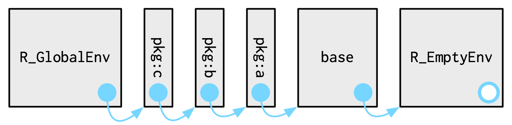
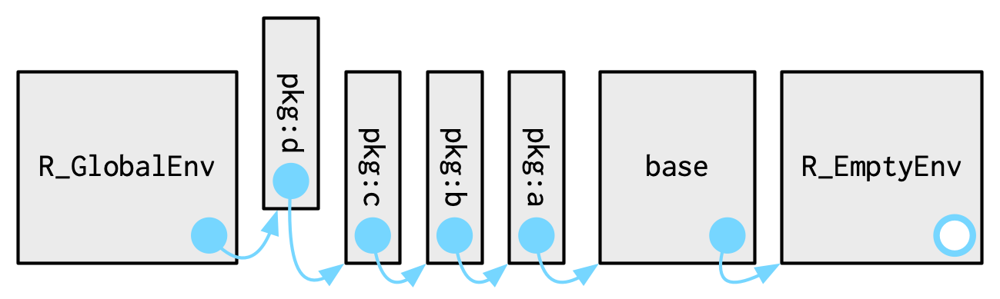

SDS 270: Programming for Data Science in R
We will focus on primarily Chapter 7 from Advanced R.
Similar to a named list, but
To see what is in an environment, use env_print().
On your own: Run env_print() in the console. What does it show?

search() to see this path [1] ".GlobalEnv" "package:rlang" "package:stats"
[4] "package:graphics" "package:grDevices" "package:utils"
[7] "package:datasets" "package:methods" "Autoloads"
[10] "package:base" library()Load in a package of your choice. Then run the following:
Answer the following questions (in template file):

[1] "asOneSidedFormula" "r2dtable" "drop.terms"
[4] "confint.lm" "is.mts" "nlminb"
[7] "alias" "gaussian" "profile"
[10] "ls.diag" "mahalanobis" "rmultinom"
[13] "dpois" "numericDeriv" "makepredictcall"
[16] "qlogis" "loadings" "dlogis"
[19] "nlm" "residuals.glm" "qcauchy"
[22] "nextn" "nls" "plot.stepfun"
[25] "arima0.diag" "dummy.coef" "ftable"
[28] "as.formula" "pairwise.wilcox.test" "time"
[31] "embed" "mantelhaen.test" "dwilcox"
[34] "ar" "oneway.test" "fligner.test"
[37] "bw.bcv" "rWishart" "predict.glm"
[40] "logLik" "confint.default" "AIC"
[43] "rlogis" "bw.ucv" "arima"
[46] "plot.ts" "tsp" "model.extract"
[49] "tsp<-" "stat.anova" "update.formula"
[52] "qbeta" "bw.SJ" "factanal"
[55] "drop.scope" "summary.aov" "optimHess"
[58] ".lm.fit" "cooks.distance" "dnorm"
[61] "psmirnov" "extractAIC" "qbirthday"
[64] "C" "sortedXyData" "D"
[67] "lowess" "varimax" "optimize"
[70] "manova" "deviance" "optim"
[73] "lag.plot" "constrOptim" "splinefunH"
[76] "reformulate" "pacf" "mcnemar.test"
[79] "df" "tsSmooth" "make.link"
[82] "glm.control" "hasTsp" "pgamma"
[85] "addmargins" "dexp" "power.anova.test"
[88] "prop.test" "model.weights" "ave"
[91] "is.stepfun" "heatmap" "stepfun"
[94] "loess.smooth" "window<-" "line"
[97] "qqline" "ar.mle" "residuals"
[100] "lsfit" "get_all_vars" "dt"
[103] "splinefun" "ks.test" "cor"
[106] "add.scope" "ecdf" "pwilcox"
[109] "cov" "dendrapply" "rsignrank"
[112] "bandwidth.kernel" "as.dist" "SSweibull"
[115] "bw.nrd" "start" "plnorm"
[118] "ts.union" "mvfft" "dweibull"
[121] "as.ts" "cor.test" ".checkMFClasses"
[124] "effects" "reorder" "KalmanForecast"
[127] "eff.aovlist" "qgamma" "glm.fit"
[130] "dgamma" "plot.spec.coherency" "cov2cor"
[133] "ls.print" "setNames" "acf2AR"
[136] "add1" "rcauchy" "shapiro.test"
[139] "deriv3" "window" "model.tables"
[142] "model.matrix" ".nknots.smspl" "KalmanLike"
[145] "SSasymp" "predict" "as.stepfun"
[148] "power.prop.test" "t.test" "rstandard"
[151] "binom.test" "cophenetic" "pbeta"
[154] "KalmanRun" "naprint" "qlnorm"
[157] "plclust" "model.response" "dlnorm"
[160] "lag" "spec.pgram" "interaction.plot"
[163] "fitted" "rgeom" "estVar"
[166] "rgamma" "arima0" "loglin"
[169] "ar.yw" "promax" "phyper"
[172] "drop1" "SSfol" "runif"
[175] "family" "quantile" "wilcox.test"
[178] "psignrank" "complete.cases" "offset"
[181] "scatter.smooth" "dmultinom" "rlnorm"
[184] "approx" "naresid" "SSfpl"
[187] "proj" "supsmu" "qqnorm"
[190] "end" "printCoefmat" "princomp"
[193] "dnbinom" "lm.influence" "aggregate.data.frame"
[196] "rect.hclust" "convolve" "ansari.test"
[199] "median.default" "ARMAacf" "poly"
[202] "NLSstRtAsymptote" "power.t.test" "write.ftable"
[205] "qhyper" "polym" "weights"
[208] "dhyper" "contrasts<-" "kernel"
[211] "friedman.test" "acf" "qwilcox"
[214] "filter" "lm.fit" "rpois"
[217] "cmdscale" "factor.scope" "Gamma"
[220] "pweibull" "pchisq" "ksmooth"
[223] "symnum" "smooth" "quasipoisson"
[226] "ppr" "spec.ar" "pnbinom"
[229] "coefficients" "model.offset" "dbeta"
[232] "SSasympOff" "pbirthday" "replications"
[235] "ar.ols" "rhyper" "spectrum"
[238] "lm" "expand.model.frame" "kernapply"
[241] "bw.nrd0" "stl" "loess"
[244] "IQR" "qgeom" "contr.helmert"
[247] "na.pass" "toeplitz" "pairwise.t.test"
[250] "dist" ".getXlevels" "NLSstClosestX"
[253] "getInitial" "sigma" "qchisq"
[256] "contr.poly" "dchisq" "spline"
[259] "qunif" "confint" "pairwise.table"
[262] "SSasympOrig" "pexp" "plot.spec.phase"
[265] "medpolish" "density.default" "ptukey"
[268] "cancor" "Box.test" "TukeyHSD"
[271] "rnorm" "poisson" "var.test"
[274] "bartlett.test" "na.fail" "summary.stepfun"
[277] "model.frame" "covratio" "contrasts"
[280] "ar.burg" "residuals.lm" "df.residual"
[283] "ts.intersect" "power" "SSlogis"
[286] "glm" "rchisq" "getCall"
[289] "chisq.test" "model.matrix.lm" "coef"
[292] "step" "ppoints" "vcov"
[295] ".preformat.ts" "qqplot" "DF2formula"
[298] "update.default" "qtukey" "qpois"
[301] "quade.test" "df.kernel" "influence"
[304] "qsmirnov" "cutree" "pf"
[307] "poisson.test" "case.names" "frequency"
[310] "tsdiag" "qweibull" "NLSstLfAsymptote"
[313] "kmeans" "weighted.residuals" "mauchly.test"
[316] "napredict" "qexp" "deriv"
[319] "var" "aggregate.ts" "rwilcox"
[322] "SSbiexp" "pt" "rsmirnov"
[325] "qf" "xtabs" "kruskal.test"
[328] "median" "as.hclust" "termplot"
[331] "rweibull" "resid" "pgeom"
[334] "qnbinom" "se.contrast" "summary.manova"
[337] "prcomp" "preplot" "plot.ecdf"
[340] "arima.sim" "lm.wfit" "ccf"
[343] "is.leaf" "na.action" "screeplot"
[346] "approxfun" "NLSstAsymptotic" "order.dendrogram"
[349] "cycle" "qt" "rf"
[352] "punif" "quasi" "ts.plot"
[355] "cov.wt" "mood.test" "PP.test"
[358] "is.empty.model" "loess.control" "decompose"
[361] "aggregate" "BIC" "reshape"
[364] "makeARIMA" "ARMAtoMA" "weighted.mean"
[367] "pbinom" "selfStart" "SSgompertz"
[370] "qnorm" "inverse.gaussian" "na.omit"
[373] "sd" "rt" "fft"
[376] "dcauchy" "fivenum" "toeplitz2"
[379] "relevel" "summary.glm" "rexp"
[382] "monthplot" "dfbeta" "diffinv"
[385] "nobs" "SSmicmen" "is.ts"
[388] "dummy.coef.lm" "hatvalues" "variable.names"
[391] "Pair" "model.frame.default" "anova"
[394] "simulate" "dffits" "model.matrix.default"
[397] "contr.SAS" "contr.treatment" "as.dendrogram"
[400] "prop.trend.test" "predict.lm" "ppois"
[403] "pcauchy" "smoothEnds" "qbinom"
[406] "hat" "p.adjust" ".MFclass"
[409] "dbinom" "terms.formula" "spec.taper"
[412] "HoltWinters" "ts" "na.exclude"
[415] "dsignrank" "is.tskernel" "fitted.values"
[418] "qsignrank" "integrate" "optimise"
[421] "binomial" "KalmanSmooth" ".vcov.aliased"
[424] "deltat" "SSD" "p.adjust.methods"
[427] "smooth.spline" "summary.lm" "rstudent"
[430] "dgeom" "density" "hclust"
[433] "terms" "fisher.test" "rbinom"
[436] "isoreg" "nls.control" "formula"
[439] "contr.sum" "uniroot" "quasibinomial"
[442] "dfbetas" "na.contiguous" "influence.measures"
[445] "dunif" "pairwise.prop.test" "rnbinom"
[448] "rbeta" "pnorm" "knots"
[451] "cpgram" "biplot" "mad"
[454] "runmed" "read.ftable" "plogis"
[457] "delete.response" "aov" "update"
[460] "StructTS" [[1]] $ <env: imports:stats>
[[2]] $ <env: namespace:base>
[[3]] $ <env: global> [[1]] $ <env: package:rlang>
[[2]] $ <env: package:stats>
[[3]] $ <env: package:graphics>
[[4]] $ <env: package:grDevices>
[[5]] $ <env: package:utils>
[[6]] $ <env: package:datasets>
[[7]] $ <env: package:methods>
[[8]] $ <env: Autoloads>
[[9]] $ <env: package:base>
[[10]] $ <env: empty>Let’s write a function that returns the environment that runs during its execution. Note that this is not the global environment.
e1071e1071 developers created [1] "R_e1071_floyd" "bclust" "plot.bclust"
[4] "gknn.formula" "bootstrap.lca" ".__S3MethodsTable__."
[7] "na.fail.matrix.csr" "allShortestPaths" "predict.lca"
[10] "summary.lca" "print.ica" "best.nnet"
[13] "naiveBayes.default" "sigmoid" "tune.control"
[16] "fclustIndex" ".packageName" "bincombinations"
[19] "cshell" "boxplot.bclust" "print.tune"
[22] "qdiscrete" "matchClasses" "tune.rpart"
[25] "print.lca" "print.summary.tune" "print.summary.svm"
[28] "rwiener" "read.matrix.csr" "R_cmeans"
[31] "tune.nnet" "extractPath" "best.randomForest"
[34] "svm.formula" "tune" "hamming.distance"
[37] "print.naiveBayes" "tune.randomForest" "element"
[40] "best.rpart" "summary.svm" "write.matrix.csr"
[43] "permutations" "lines.probplot" "plot.stft"
[46] "tune.knn" "best.gknn" "skewness"
[49] "compareMatchedClasses" "prune.bclust" "ica"
[52] "best.svm" "predict.svm" "print.bootstrap.lca"
[55] "pdiscrete" "hamming.window" "print.svm"
[58] "best.tune" "R_svmtrain" "countpattern"
[61] "centers.bclust" "moment" "d2sigmoid"
[64] "impute" "hanning.window" "svm.default"
[67] "clusters.bclust" "print.fclust" "write.svm"
[70] "rectangle.window" "R_ufcl" "R_svmpredict"
[73] "hsv_palette" "plot.tune" "rbridge"
[76] "fitted.gknn" "knn.wrapper" "kurtosis"
[79] "naiveBayes" "tune.svm" "svm"
[82] "classAgreement" "coef.svm" "rdiscrete"
[85] "plot.ica" "naiveBayes.formula" "rpart.wrapper"
[88] "stft" "print.summary.lca" "lca"
[91] "plot.svm" "ddiscrete" "scale_data_frame"
[94] "gknn" "print.gknn" ".__NAMESPACE__."
[97] "cmeans" "hclust.bclust" "gknn.default"
[100] "summary.tune" "R_cshell" "probplot"
[103] "dsigmoid" "R_svmwrite" "interpolate"
[106] "tune.gknn" "predict.gknn" "matchControls"
[109] "predict.naiveBayes" e1071e1071 developers use[1] 266 [1] "cdplot" "glyphAnchor"
[3] "text.default" ".setMask"
[5] "tiff" "hist"
[7] "convertColor" "dnorm"
[9] "dev.set" "assocplot"
[11] "optim" "win.graph"
[13] "as.graphicsAnnot" "layout"
[15] "graphics.off" "glyphWidthLeft"
[17] "png" "write.table"
[19] "grey.colors" "cairo_ps"
[21] "contourLines" "savePlot"
[23] "abline" "matpoints"
[25] "blues9" "delete.response"
[27] "palette.pals" "is.raster"
[29] ".defineGroup" "image.default"
[31] "segments" "nclass.FD"
[33] "dev.capabilities" "dev.size"
[35] "gray" "terms"
[37] "hist.default" "runif"
[39] "frame" ".clipPath"
[41] "arrows" "colorRamp"
[43] ".setClipPath" "CIDFont"
[45] "cairoSymbolFont" "grconvertX"
[47] "complete.cases" "grconvertY"
[49] "as" "check.options"
[51] "contour" "colors"
[53] "barplot" "legend"
[55] "pairs" "model.frame"
[57] "plot.function" "model.response"
[59] "pictex" "stars"
[61] "par" "Axis"
[63] "setGraphicsEventHandlers" "nclass.scott"
[65] "dev.interactive" "mosaicplot"
[67] "recordPlot" "plot.window"
[69] "xfig" "dev.list"
[71] "X11" "cm"
[73] "pnorm" "plot.xy"
[75] "axis.POSIXct" "split.screen"
[77] "rasterImage" "boxplot.matrix"
[79] "colorConverter" "getGraphicsEventEnv"
[81] "points.default" "erase.screen"
[83] "dev.hold" "predict"
[85] "median" "new"
[87] "pchisq" "glyphWidth"
[89] "identify" "win.metafile"
[91] "symbols" "head"
[93] "rect" ".radialGradientPattern"
[95] "sd" "lines"
[97] "nclass.Sturges" "pdf.options"
[99] "setGraphicsEventEnv" "curve"
[101] "boxplot" "pdf"
[103] "dev.copy" "stripchart"
[105] "rgb2hsv" "xinch"
[107] "grey" "windowsFont"
[109] "mtext" "bxp"
[111] "colorspaces" "embedGlyphs"
[113] "xspline" "palette"
[115] "Type1Font" "x11"
[117] "persp" "lines.default"
[119] "dev2bitmap" "model.extract"
[121] "dev.capture" "gray.colors"
[123] "xtabs" "chull"
[125] "ts" "colorRampPalette"
[127] "dev.copy2pdf" "bitmap"
[129] "msgWindow" "cm.colors"
[131] "plot.new" "n2mfrow"
[133] "stem" "matlines"
[135] "heat.colors" "time"
[137] "title" "polypath"
[139] "na.fail" "getGraphicsEvent"
[141] "kmeans" "fourfoldplot"
[143] "dev.copy2eps" "locator"
[145] "plot.design" ".mask"
[147] "xy.coords" "hcl"
[149] ".devUp" "dev.cur"
[151] "qnorm" "dev.new"
[153] "pdfFonts" "boxplot.default"
[155] "glyphFontList" ".setPattern"
[157] "filled.contour" "fft"
[159] "polygon" "grid"
[161] "dev.next" "knn"
[163] "topo.colors" "make.rgb"
[165] "embedFonts" "Hershey"
[167] "glyphInfo" ".axisPars"
[169] "xyz.coords" "knn1"
[171] "recordGraphics" "image"
[173] ".tilingPattern" "axisTicks"
[175] "postscript" "smoothScatter"
[177] "bmp" "dev.off"
[179] "col2rgb" "close.screen"
[181] "bringToTop" "boxplot.stats"
[183] "trans3d" "windows.options"
[185] "dotchart" "hcl.colors"
[187] "yinch" "dev.flush"
[189] "axTicks" "cmdscale"
[191] "colours" "rainbow"
[193] "hsv" "plot"
[195] "matplot" "layout.show"
[197] "devAskNewPage" "spineplot"
[199] "glyphHeightBottom" "fitted"
[201] "setEPS" "sunflowerplot"
[203] "dist" "pie"
[205] "points" "na.pass"
[207] "glyphJust" "plot.default"
[209] "screen" "model.matrix"
[211] "clip" "as.raster"
[213] "panel.smooth" "contour.default"
[215] "rug" "ps.options"
[217] "deviceIsInteractive" "replayPlot"
[219] "windows" "rgb"
[221] "axis" "quantile"
[223] "cutree" "ppoints"
[225] "strwidth" "dev.prev"
[227] "hcl.pals" "var"
[229] ".ruleIndex" "postscriptFonts"
[231] "xyinch" "barplot.default"
[233] ".opIndex" "rnorm"
[235] "box" "axis.Date"
[237] "pairs.default" "grSoftVersion"
[239] "dev.print" ".getXlevels"
[241] "glyphFont" "jpeg"
[243] "xyTable" "windowsFonts"
[245] "glyphHeight" "extendrange"
[247] "napredict" "palette.colors"
[249] ".linearGradientPattern" "svg"
[251] "na.omit" "strheight"
[253] "setPS" "text"
[255] "dev.control" "lcm"
[257] "cairo_pdf" ".useGroup"
[259] "adjustcolor" ".filled.contour"
[261] "densCols" "terrain.colors"
[263] "getClass" "coplot"
[265] "co.intervals" "win.print" e1071e1071 users can see [1] "svm" "element" "best.randomForest"
[4] "moment" "tune.knn" "rwiener"
[7] "ddiscrete" "countpattern" "hamming.distance"
[10] "gknn" "compareMatchedClasses" "extractPath"
[13] "hamming.window" "sigmoid" "skewness"
[16] "kurtosis" "bincombinations" "permutations"
[19] "hsv_palette" "rbridge" "tune.control"
[22] "centers.bclust" "rectangle.window" "naiveBayes"
[25] "pdiscrete" "matchClasses" "ica"
[28] "tune.svm" "qdiscrete" "tune.randomForest"
[31] "write.svm" "best.tune" "d2sigmoid"
[34] "write.matrix.csr" "cmeans" "best.rpart"
[37] "lca" "probplot" "bclust"
[40] "hclust.bclust" "impute" "interpolate"
[43] "best.svm" "best.gknn" "cshell"
[46] "tune.gknn" "scale_data_frame" "clusters.bclust"
[49] "best.nnet" "hanning.window" "tune"
[52] "tune.rpart" "allShortestPaths" "tune.nnet"
[55] "classAgreement" "stft" "rdiscrete"
[58] "matchControls" "bootstrap.lca" "read.matrix.csr"
[61] "fclustIndex" "dsigmoid" In pairs,
SDS 270 | Environments